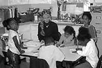

WHAP SERVICES AND PROGRAMS
After-School "Safe House" Tutorial Program
This in- and after-school tutorial program serves students in grades Kindergarten through high school and emphasizes work with children who are one or more grade levels behind, in two or more subject areas. It is held every Monday-Thursday (except holidays) from 3:00 p.m-6:00 p.m. It also serves a light snack so the kids aren't hungry while working. The tutors are very helpful, enthusiastic, friendly, and are willing to help you get through all your homework successfully.
WHAP Scholastic Academy
|  Private School for children in Kindergarten through 8th grade. Detailed description of our school may be found here. |
Computer Literacy Classes (BOT/ROP)
This free program, started in 1992, aimed at empowering Marin City residents to make positive changes in their lives. This originally a grassroots program is the only Regional Occupational Program that provides "Computer Literacy" and "Business Office Technology" classes in Southern Marin. It is designed to meet the needs of the disadvantaged and is accessible to the handicapped. The classes are offered Tuesday and Thursday from 10:00 a.m. to 12:00 p.m. Our Computer Learning Center is also open Monday and Wednesday for lab practice. Our original goal was that all Golden Gate Village residents become computer literate. Even though we originally focused on local community, we welcome anybody from Marin County who wants to become computer literate and acquire computer skills required in a modern business environment.
Children's Computer Classes
This program uses interactive computer media (including games),
and software-driven curriculum which minimizes the need for
hands-on instruction and offers
youth recreational and educational alternatives to drug use and
criminal behavior. It teaches youth about the dangers of drug
use and assists them in developing resistance skills; enhances
youth's feeling of confidency, self-esteem, identity; and
prepares youth to compete favorably for future educational and
employment opprotunities.
Multimedia Class
This class is held every Thursday evening between 7:00 p.m.
to 9:00 p.m. Bring any computer questions to this class --
experienced and knowledgeable volunteer educator will help you
find the answers and guide you through your learning experience.
(Subjects of study include web design, multimedia, computer
graphics, troubleshooting computer problems, understanding and
building your new computer).
Finders' Keepers Shop
| This is a free give-away shop for clothing and household goods. |
GED/ESL Literacy Class
The GED/ESL Literacy Class, in cooperation with Marin Literacy Council, provides tutors to teach English to residents who don't speak English. Vietnamese residents of Marin City have benefited greatly from this program.
Family Help and Counseling
We are a recognised agency of Southern Marin for Housing, Rental and Critical Family Needs help, referrals, and counseling (a collaboration effort with "Community Action of Marin" organization).
Landscaping & Landscaping Training
Discontinued in 2009 this Landscaping Contract with the Marin County Housing Authority provided employment opportunities for Marin City residents for many years. Partnering with Marin Conservation corps, our Landscaping Services trained young men to be gardeners and provided opportunities to own businesses in public housing areas. Our workers were working diligently to care for and clean up the community by performing the following duties: picking up garbage, monthly hedge cutting, weekly lawn mowing and debris blowing. Their quality work was keeping Marin City clean and in good shape for a long time!